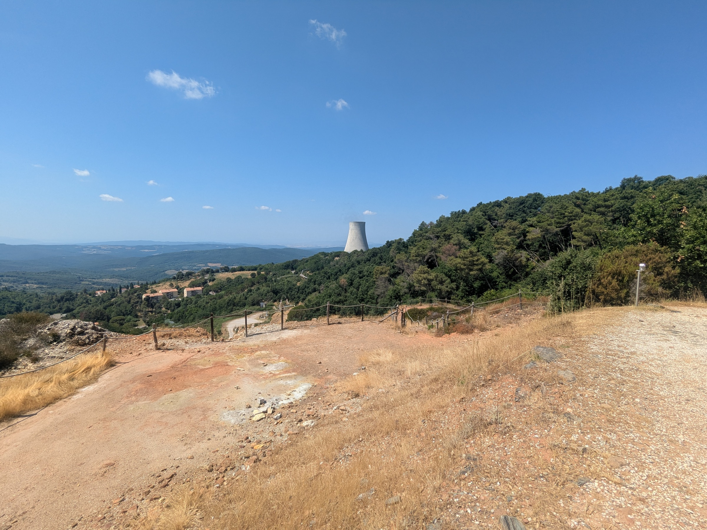
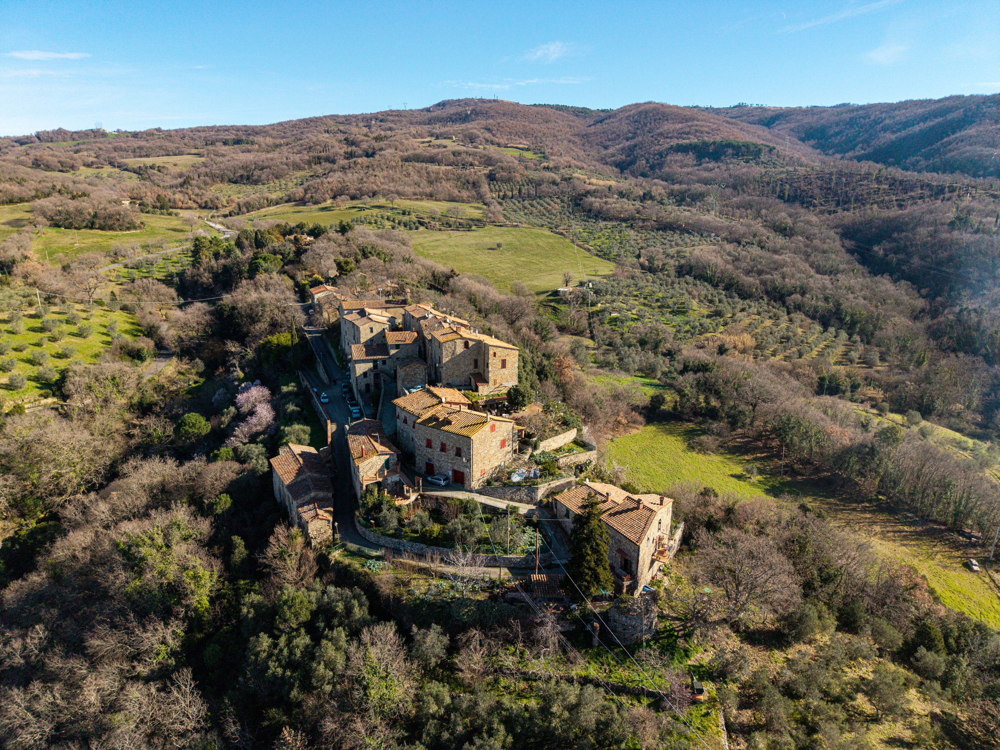
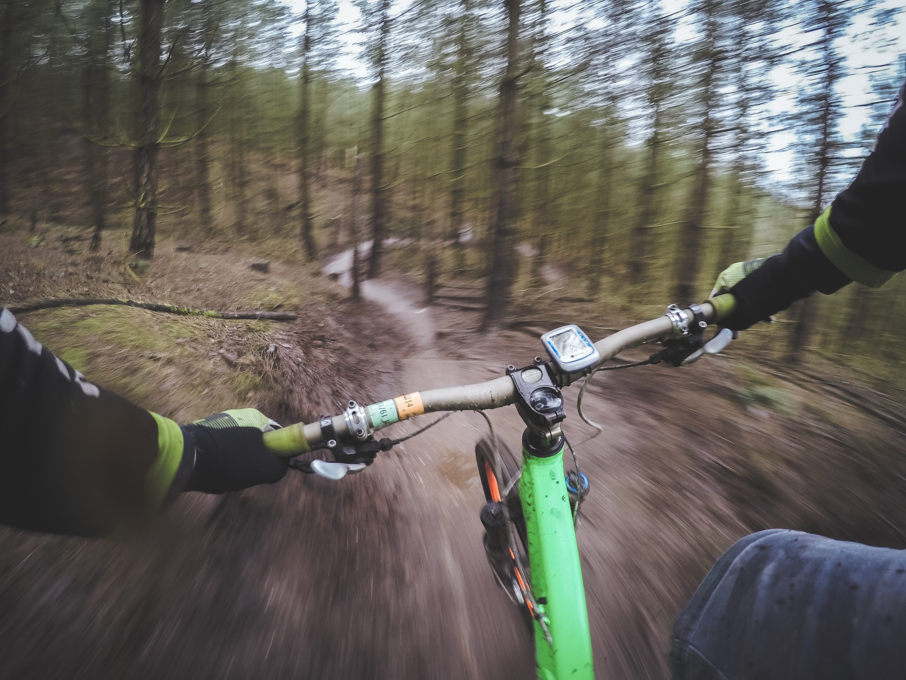
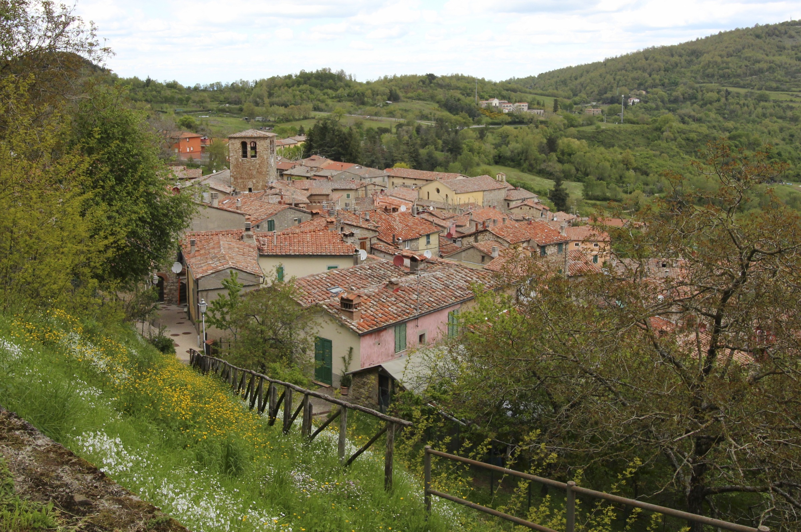

Borgo medievale nel cuore geotermico della Toscana: fumarole, soffioni e le colline bianche del Parco delle Biancane. Un paesaggio quasi lunare, dentro un Geoparco UNESCO, da attraversare in bici.
Quattro percorsi ufficiali dalla porta del borgo, dal gravel tecnico tra le fumarole ai lunghi anelli tra i borghi delle Colline Metallifere.

Colline bianche, fumarole e soffioni: il volto geotermico del territorio, con anello escursionistico e panorami.

Piazza Casalini, le Logge, la Chiesa di San Lorenzo, il Museo Fucini e il panorama dalla Rocca.

Area trail attorno alle Biancane, pump track ai Lagoni a ingresso libero, noleggio e ricarica e-bike.

Anello di 90 km Massa Marittima–Monterotondo–Montieri: 14 aree sosta e 10 colonnine di assistenza.
Four loops ready to download — open the track in Ride with GPS and ride.
 Gravel
GravelRocchette Pannocchieschi, Monte Arsenti
gravel · e-bike consigliata Gravel
GravelLe Fumarole, La Leccia, Le Biancane
gravel · e-bike consigliata Road
Road Road
RoadMontieri, Radicondoli, Castelnuovo V.C., Le Fumarole
asfaltoBook from verified bike-friendly stays in the area — tracked by Cycling in Tuscany.